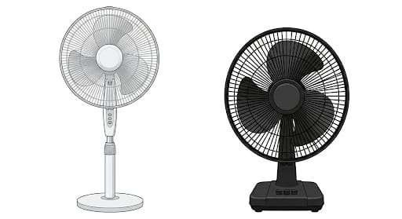
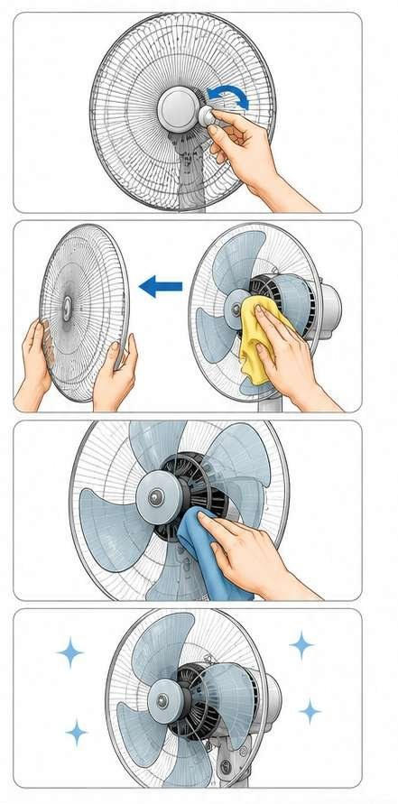
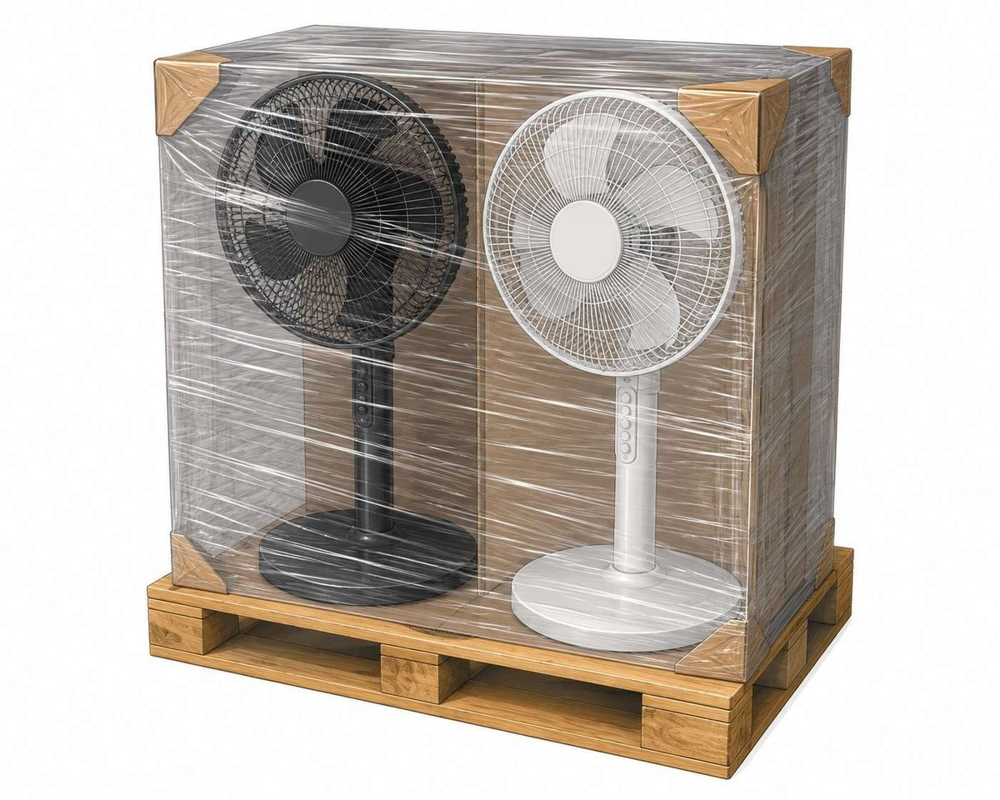

Prima di eseguire gli interventi di questa scheda di manutenzione, valutare i potenziali rischi e condizioni pericolose che richiedono la compilazione del DC-85 e leggere il DC-82.
Pulizia


Scollegare il ventilatore dalla presa elettrica prima di iniziare qualsiasi operazione di pulizia.
Rimuovere la griglia anteriore svitando la manopola centrale o sganciando i fermi laterali, a seconda del modello.
Estrarre delicatamente la griglia frontale e appoggiarla su un piano pulito.
Pulire la griglia con un panno umido oppure lavarla con acqua tiepida e detergente neutro.
Smontare le pale del ventilatore svitando il fermo centrale.
Pulire accuratamente ogni pala con un panno morbido leggermente umido per rimuovere polvere e sporco accumulato.
Utilizzare un detergente delicato o un disinfettante non aggressivo sulle superfici plastiche.
Pulire anche la parte interna del ventilatore, il motore esterno protetto e la griglia posteriore utilizzando un panno asciutto o leggermente umido.
Non spruzzare direttamente liquidi sul motore o sulle parti elettriche.
Asciugare completamente tutte le componenti con un panno asciutto e pulito.
Rimontare le pale assicurandosi che siano fissate correttamente.
Riposizionare la griglia anteriore e bloccarla tramite ghiera o ganci di chiusura.
Verificare che tutte le parti siano ben fissate e stabili.
Stoccaggio

Proteggere il ventilatore con film estensibile, cellophane protettivo oppure copertura antipolvere.
Posizionare il ventilatore in posizione stabile su pallet
Evitare sovrapposizioni che possano deformare la griglia o le pale.
Bloccare il materiale sul pallet con film protettivo per evitare movimenti durante il trasporto.
Applicare un'etichetta identificativa con descrizione del materiale e quantità.
Conservare il ventilatore in ambiente asciutto, pulito e lontano da fonti di umidità, calore o sostanze chimiche.
Evitare urti o schiacciamenti che possano danneggiare struttura, motore o pale del ventilatore.